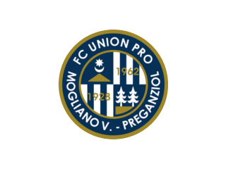
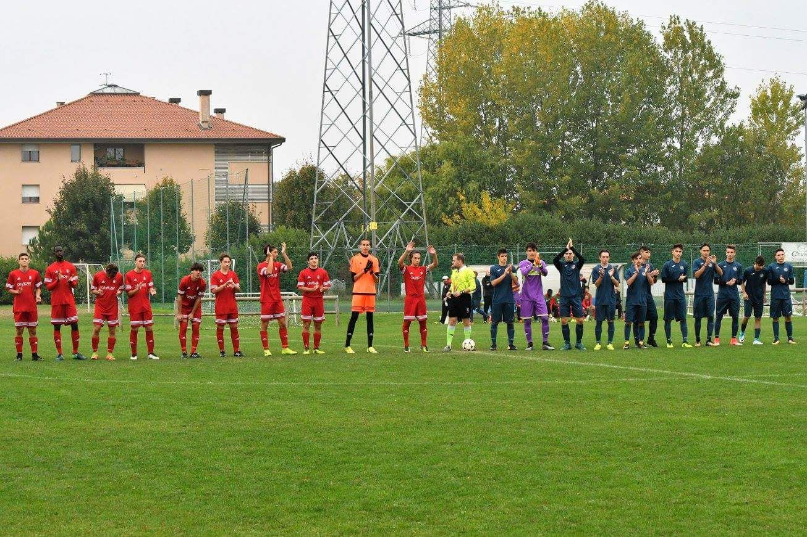
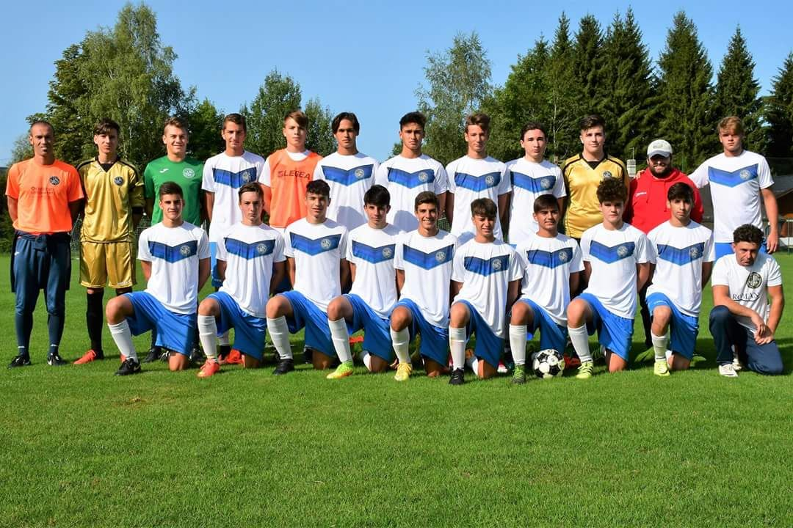
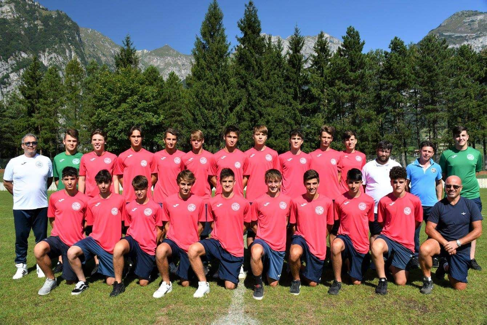

Stagione 2016-2017
PUNTI E POSIZIONE
Prima Squadra: Eccellenza Girone B
punti: 41 posizione: 7
Juniores: Regionali Girone E
punti: 75 posizione: 1
Allievi: Elite Girone B
punti: 30 posizione: 10
Allievi: Sperimentali Girone B
punti: 53 posizione: 7
Giovanissimi: Elite Girone B
punti: 41 posizione: 6
Giovanissimi: Sperimentali Girone A
punti: 21 posizione: 13

Immagini & Foto
  
Newsletter & Commenti
21/01/2018: Amara sconfitta degli allievi elite
sul campo di Noale. Partita terminata 2-0,
prestazione insufficiente.
21/01/2018: Vittoriosi 1-0 gli allievi
sperimentali in casa contro il Belluno,
agganciato il 4 posto.
21/01/2018: I giovanissimi elite hanno
battuto il Calvi Noale 1-0 in casa
e sono fuori dalla zona
retrocessione.
21/01/2018: I giovanissimi sperimentali
hanno perso contro il Rosà 3-0.
Brutta sconfitta alla quale
bisogna reagire nel modo giusto.
Forza ragazzi!!
20/01/2018: La juniores elite
ha vinto contro il Villorba
2-1 e hanno cosi' consolidato
il secondo posto in classifica.